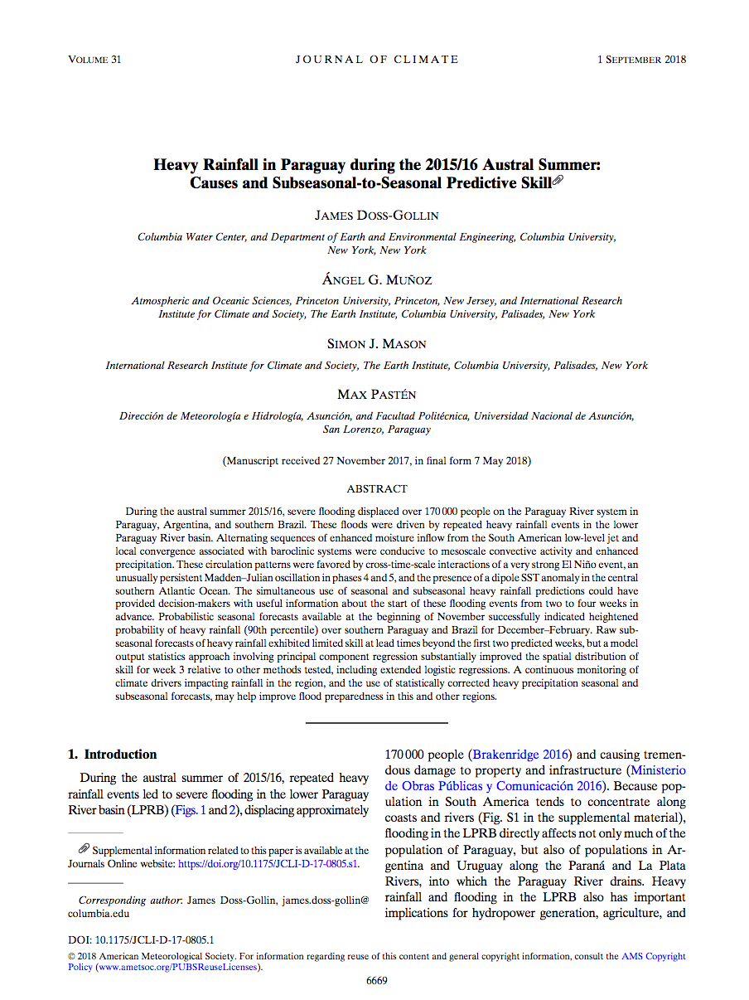

Paper on Paraguay Rainfall and Floods in Journal of Climate
Posted on Mon 07 May 2018 in updates
My paper with Ángel G. Muñoz, Simon J. Mason, and Max Pastén titled Heavy Rainfall in Paraguay during the 2015/16 Austral Summer: Causes and Subseasonal-to-Seasonal Predictive Skill has been published in Journal of Climate!
Rather than attempt to summarize the paper myself, I invite you to read the outstanding post that Elisabeth Gawthrop of IRI wrote about our paper.
Para quienes prefieren el castellano, también hemos traducido el resumen al castellano el excelente sumario de nuestro nuevo artículo en el Journal of Climate"
